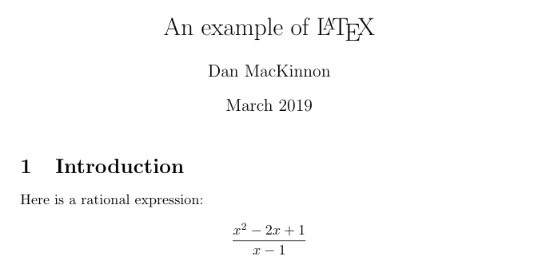

Before you start
Before learning about what LaTeX is, spend a few minutes thinking about the problem of writing mathematics for digital documents. How do you do this today? Do you avoid using word-processers when creating resources and assessments because it is hard to include mathematical notation and get the formattng right? Do you use equation editors, or hand-write the mathematics and paste it in when photocopying? Teachers use many strategies to overcome the difficulties of communicating mathematics in digital environments.
Consider these questions:
- What makes writing mathematics difficult?
- How do you avoid those problems, or solve them, when you teach a math class?
At a minimum, LaTeX can be another arrow in your quiver of strategies for making comunicating mathematics easier. Depending on how you apply it and what kind of documents you create and platforms you use, you may find that knowing a little LaTeX can be a great benefit - improving the quality of your communication and expanding your ability to use new platforms in your teaching.
Introducing LaTeX
One way to think about LaTeX is as a computer or scripting language for writing mathematics. You type in commands, and the LaTeX processor converts it into the kind of math notation that we expect to see in printed documents. For example, you type:
\frac{x^2-2x+1}{x-1}
As you may notice from the example above, writing LaTeX involves a combination somse standard conventions for writing digital mathematics, like using the carrot (^) symbol for exponents, using regular text, and some special commands like the "\frac{}{}" to create a fraction.
In the modules that follow this one, you'll learn some of the conventions and commands used in LaTeX, and also how to use LaTeX on various platforms. One example is web-pages like the one you are reading now, where the formulas shown were rendered using LaTeX by integrating a special JavaScript library called MathJaX.
The most powerful and widely used system for creating equations and mathematical documents is not a new technology. The TeX formatting system was originally created by Donald Knuth in 1978, and an easier to use software layer, LaTex, was added to TeX by Leslie Lamport in 1980. This is old technology: it has been used by mathematicians and scientists around the world for decades, and is very widely used today (LaTeX. 2019).
So what is new? There are two relatively new developments that make it very useful for math teachers to learn how to use LaTeX:
- In recent years many platforms have adopted LaTeX as the means by which they display equations. Knowing the basics of LaTeX commands will allow you to quickly add equations in a consistent way into wikis, webpages, platforms like Brightspace, Google Docs, and programs like GeoGebra.
- Running a complete LaTeX processor on your own computer used to require some technical skill and a willingness to muck around with installing components and adjusting configuration - the setup was not always straightforward. Now there are cloud-based LaTeX offerings (like Overleaf) which make it easier to produce complete LaTex documents.
LaTeX, and TeX the system it is based on, are computer languages, not applications or plugins. Although software is required to render anything written in these languages into nice mathematics (just like your browser is required to render HTML), you don’t need any special software to write LaTeX (Notepad, Sublime, vi, or any text editor will do).
LaTeX resembles HTML or Markdown in how it allows a plain text document to be enhanced with formatting instructions.
When an entire document is created using LaTeX, a simple text file is created that has some commands that instruct the LaTeX processor.
%This is a simple LaTeX file
\documentclass{article}
\usepackage[utf8]{inputenc}
\title{An example of \LaTeX}
\author{Dan MacKinnon}
\date{March 2019}
\begin{document}
\maketitle
\section{Introduction}
Here is a rational expression:
\[
\frac{x^2-2x+1}{x-1}
\]
\end{document}
In the example above, we can see comments demarcated by percent signs (%), directives about how to structure the document, and a simple example of a displayed equation, and some other LaTeX commands.
When processed by LaTeX, a text file containing the commands shown above will produce a postscript or pdf file resembling the image below.

Although you can format an entire document using LaTeX, it is often used only where needed within a document to provide the mathematics - with many platforms allowing you to insert LaTeX commands where required.